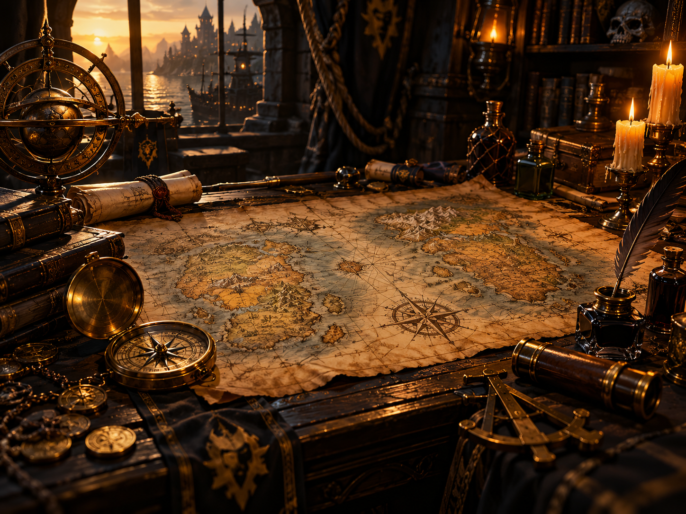

RESOURCES
USEFUL ADD-ONS
Recommended guild add-ons and raid-required add-ons.
PROFESSIONS/CRAFTING
Profession leveling guides, rare recipes, specializations, important raid crafts, who in Syndicate can craft what.
SUPPORTIVE WEBSITES
Wowhead, Warcraft Logs, Wago, profession sites, talent calculators, gear planners/databases.
ATTUNEMENTS & KEYS
Ony attunement, MC, BWL, UBRS key, dungeon keys, quest chains, and shortcuts.
REPUTATIONS
Argent Dawn, Hydraxian Waterlords, Zandalar Tribe, Cenarion Circle, Brood of Nozdormu — rewards and why you care.
CLASS CHANNELS
Find experienced Syndicate players to ask for class-specific advice, builds, gear help, and raid tips.